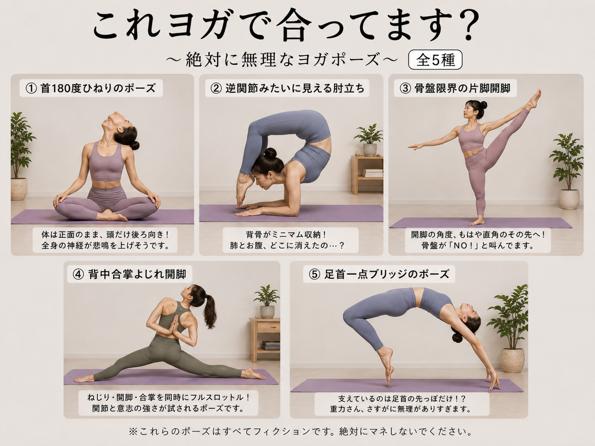
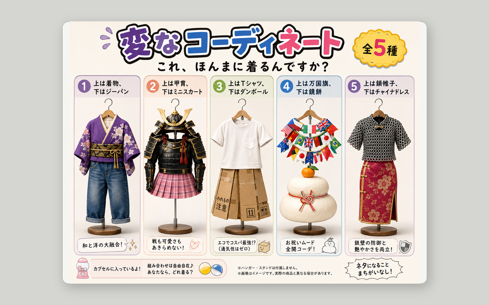
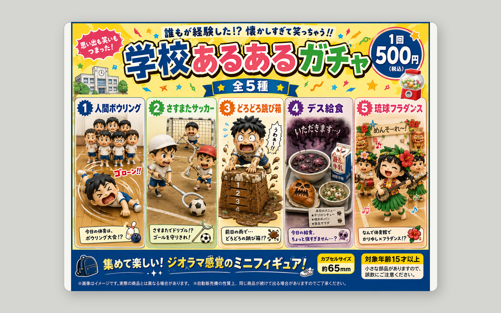
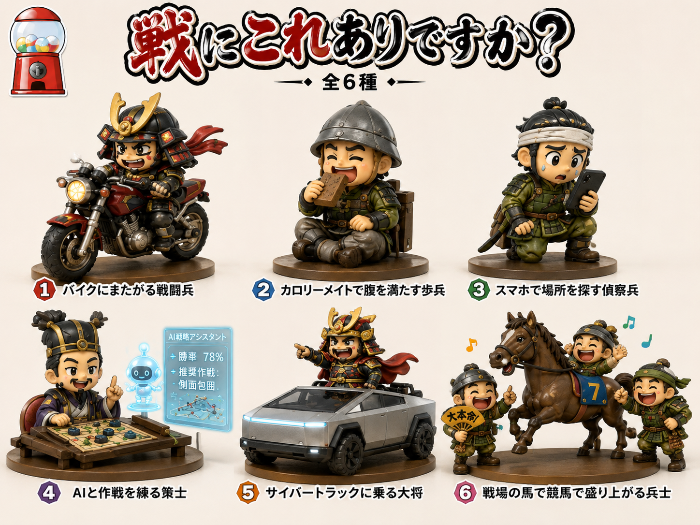

UNADOPTED 001
これヨガで合ってます？
ヨガとして成立しているのか怪しい、人体限界ギリギリのポーズを研究したシリーズ。発想は好きですが、少しだけ無理がありました。
正式採用には至らなかったものの、忘れるには惜しい研究たちです。今後どこかで復活するかもしれません。

ヨガとして成立しているのか怪しい、人体限界ギリギリのポーズを研究したシリーズ。発想は好きですが、少しだけ無理がありました。

衣服の上下関係を壊すことで、どこまでファッションと呼べるかを試みた研究。違和感は強いのですが、採用にはもう一押しでした。

勢いは十分だったものの、放心ラボの正式ラインナップとしては少し毛色が異なるため、今回は見送りとなりました。

戦と現代文明の混線をテーマにしたシリーズ。インパクトは強いものの、展示全体のトーンとの相性を見て一旦保留としました。